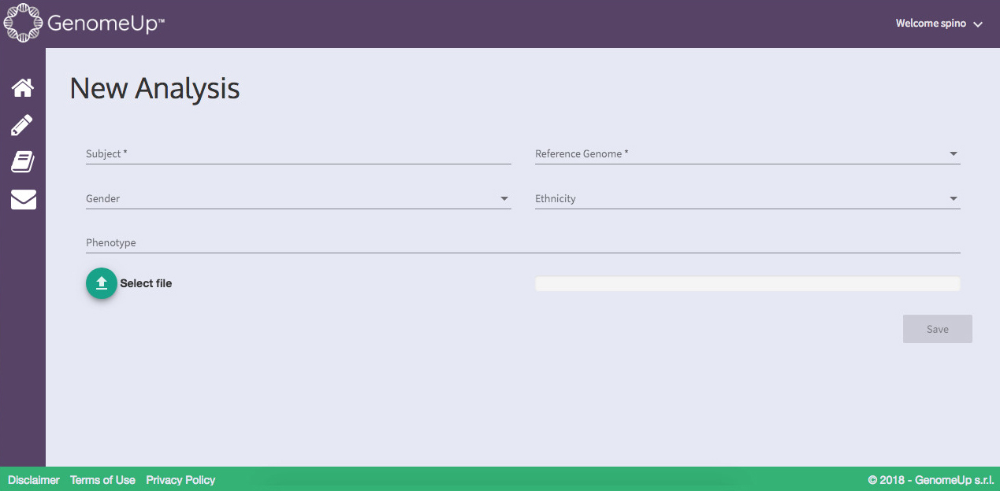
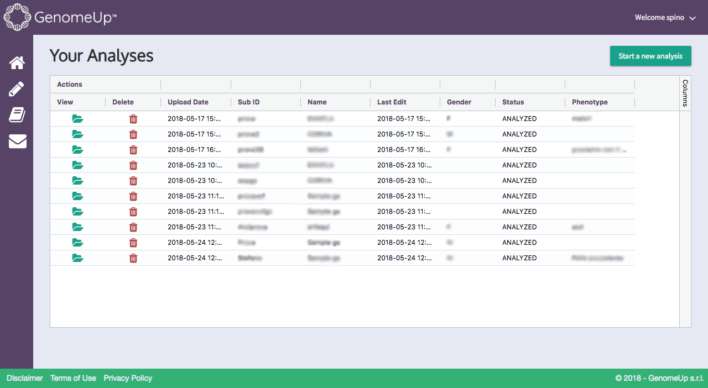
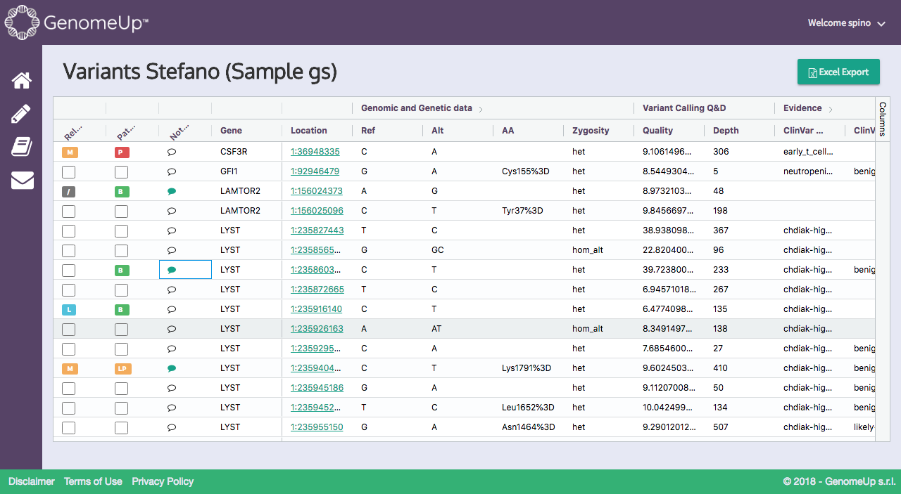
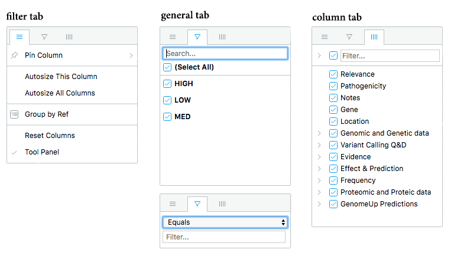
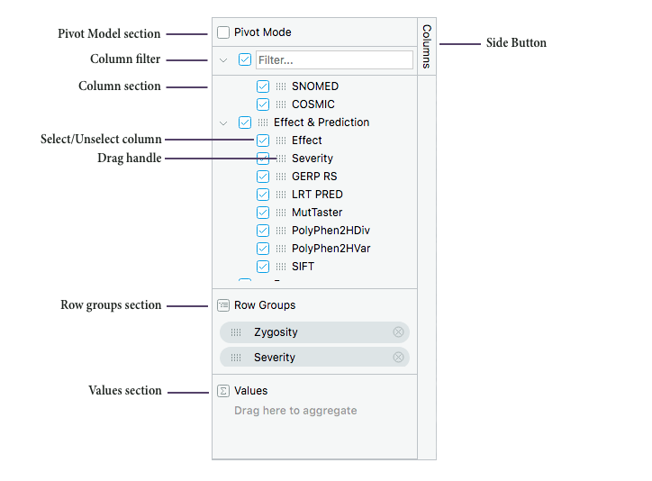
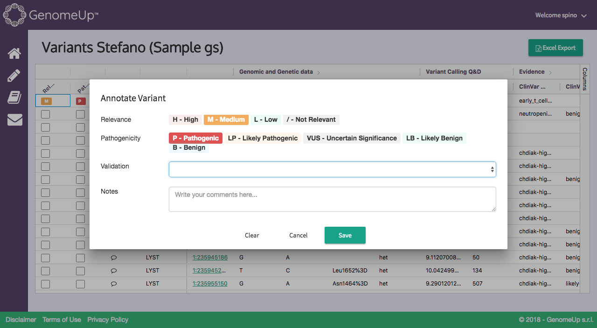

Getting started¶
GenomeUp allows to annotate, filter and view the variants of a .vcf file. After the login, the user lands in the Your Analysis page.
In the Your Analysis page the user will find a list of all the analysis. The page will be empty at first login. To run the first analysis, click on Start a new analysis on the top right. On the far left, the user can find the following buttons:
- return to home page
- start a new analysis
- read the user guide
- send us an email
Start a new analysis¶
The user can upload a new sample (.vcf or .gz format) and, moreover, add other details about the subject.
Subject (required) Set the name of the analysis.
Reference Genome (required) Choose the version of the reference assembled sequence database of the human genome: GRCh37(or hg19) and GRCh38.
Gender (optional) Set the gender of patient of the sample.
Ethnicity (optional) Set the population type in:
- African/African American (AFR)
- Latino (AMR)
- Ashkenazi Jewish (ASJ)
- East Asian (EAS)
- Finnish (FIN)
- Non-Finnish European (NFE)
- South Asian (SAS)
- Other (OTH).
Phenotype (optional) Specify the phenotype under consideration following the HPO format.
Analyses¶
The Your Analyses page shows the collection of the uploaded files. The field status shows the elaboration phase of the single analysis: analysing, analysed or error. When the status switch into analysed, the list of the annotated variants is available. With the folder icon, the user can to access to the Variants analysis page. If the user wants to delete one of its analysis can use the trash icon.
Variants analysis¶
Variants The Variants page shows the collection of the annotated .vcf variants, clustered by macro areas, as specified in Variants annotation fields.
Filter variants
Through each of the column titles in the grid the user can easily add, edit or remove filters while reviewing the variants. Click on each columns title to sort the data by ascending or descending order. Click on the right side of each columns title for the column menu. It has three panels: filter tab, general tab and columns tab.
- Filter tab
- Pin columns: locks the specific column on right or left of table, above the other columns.
- Autosize this column.
- Autosize all columns.
- Group by: groups by the content of the column.
- Reset columns: resets all filters and column setting.
- Tool panel: opens the tool panel on right of table.
- General tab: filters the selected column by content. If the column content is alphabetic, the outcome will be a list of content and a search tool for free text. If the column content is numerical, the outcome will consist of different constraints: equals, not equals, less than, less than or equals, greater than, greater than or equals,in range.
- Columns tab: shows or hides column or group of columns.
On right of table is avalaible the tool pane.
The Tool panel (on the right) is split into the following sections:
- Pivot mode section: Pivoting allows the user to take columns values and turn them into columns.
- Column filter: filters the column that the user wants to show.
- Columns section: displays all columns, clustered by column groups, available in the displayed grid. Columns order provides the columns grid and cannot be changed by user.
- Row groups section: columns can be dragged and dropped into Row Group to cluster into a single column the selected variants (for example, zygosity, severity, gene and annotated variants etc.) and can also allow to create subgroups.
- Values section: (can be obtainable only in Pivot Mode) applies functions to column values: average, count, first, last, max, min, sum.
- Side button: shows and hides the tool panel.
- Select/Unselect column: each column can be individually selected.
- Drag handle: each column can be dragged and dropped either to Row Groups or to Values.
Annotate variants Into the left of each variant row, there are three annotation types that can be defined per candidate variant.
Clicking Annotate variant to set the relevance:
- High
- Med
- Low
and the pathogenicity of the variant:
- Pathogenic
- Likely Pathogenic
- Uncertain Significance
- Likely Benign
- Benign
Moreover, it’s possible to add a note using the textbox.
Export filtered data¶
Once the variants are filtered, the user can download the report into an .xls file, by clicking on the Excel Export button.